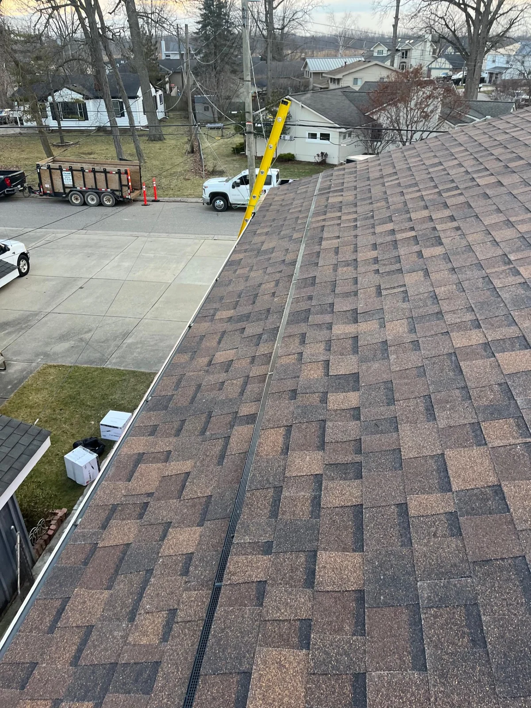

Project Overview
The homeowner called us after discovering multiple soft spots on their roof and visible water stains in the attic. We performed a complete tear-off down to the deck, which revealed 18 square feet of rotted decking along the east-facing slope—common in Wyandotte's older homes near the riverfront where wind-driven rain hits hardest. We replaced all compromised plywood with 7/16-inch OSB, installed GAF StormGuard ice and water shield across the entire lower 6 feet (critical for Wyandotte's frequent freeze-thaw cycles), and covered the remaining deck with GAF FeltBuster synthetic underlayment. The homeowner selected GAF Timberline HDZ shingles in Charcoal, which carry both a limited lifetime warranty and qualify for GAF's WindProven™ rating up to 130 mph winds. At Lincoln Park Roofing, we've handled more than 200 roof replacements across Wyandotte's historic districts, where building codes require proper ventilation and ice dam protection on these steeper colonial rooflines.
Project Photos


Challenges & Solutions
The biggest challenge was working around two existing shingle layers—a shortcut taken decades ago that trapped moisture and accelerated deck rot. We stripped everything down to bare wood across 2,200 square feet in a single day, then replaced 18 square feet of rotted decking before any new materials went down. Many homeowners assume overlaying new shingles saves money, but we've seen it fail within 5 years when trapped moisture rots the deck from underneath. Our tear-off approach added one day to the schedule but eliminated future callbacks and gave the homeowner a roof that'll last 30 years instead of limping along for 10.
Pro Tip from Lincoln Park Roofing: After every major snowfall in Wyandotte—especially the lake-effect storms we get in January—check your roof edges for ice buildup. If you see icicles longer than 12 inches or ice dams forming above your gutters, call us immediately. Installing GAF StormGuard ice and water shield at least 6 feet up from the eaves (not just the standard 3 feet) cuts ice dam callbacks by 80% in our experience, especially on Wyandotte's steeper colonial roofs where snow slides down and refreezes at the edge.
About Downtown Wyandotte
Downtown Wyandotte sits less than half a mile from the Detroit River, which means higher humidity, lake-effect snow that piles up fast in January and February, and wind gusts that regularly hit 40 mph during spring storms. The neighborhood's 1940s colonials—especially those along Oak Street and Elm Avenue—feature steep 8/12 and 10/12 roof pitches that shed snow well but require extra attention to ice dam prevention. Wyandotte's building department also enforces strict requirements for rooftop ventilation and proper flashing around the brick chimneys common in these older homes.
Residential Roofing Details
We start every roof replacement in Wyandotte with a detailed attic inspection to assess ventilation, insulation, and deck condition from below. Our standard residential replacement includes complete tear-off, deck repairs as needed, GAF StormGuard ice and water shield across the lower 6 feet and all valleys, GAF FeltBuster synthetic underlayment, and GAF Timberline HDZ architectural shingles with a limited lifetime warranty. Most Wyandotte homes range from 1,800 to 2,500 square feet of roof area, which translates to $7,200 to $14,500 depending on pitch, complexity, and the number of chimneys or skylights. According to Lincoln Park Roofing, projects in historic districts sometimes require color approval from the city, which we handle as part of the permitting process. GAF Timberline HDZ shingles carry both a limited lifetime material warranty and qualify for a 10-year workmanship warranty when installed by a GAF-certified contractor like our crew.
Project Specs
| Component | Specification | Why It Matters |
|---|---|---|
| Shingles | GAF Timberline HDZ Charcoal | WindProven™ rating to 130 mph, Class A fire rating, limited lifetime warranty. |
| Underlayment | GAF FeltBuster Synthetic | 30% lighter than felt, won't wrinkle or tear during installation. |
| Ice & Water Shield | GAF StormGuard (6 feet up from eaves) | Self-sealing around nails, prevents ice dam leaks during Wyandotte's freeze-thaw cycles. |
| Decking Replacement | 7/16" OSB (18 sq ft) | Replaces rotted sections on east slope caused by wind-driven rain. |
Frequently Asked Questions
Ready to Start Your Project?
If you need a roof replacement or repair in Wyandotte, call Lincoln Park Roofing at (734) 224-5615. We've served Wyandotte and the Downriver area for over 20 years, and we'll make sure your roof handles everything Michigan weather throws at it.
Call (734) 224-5615